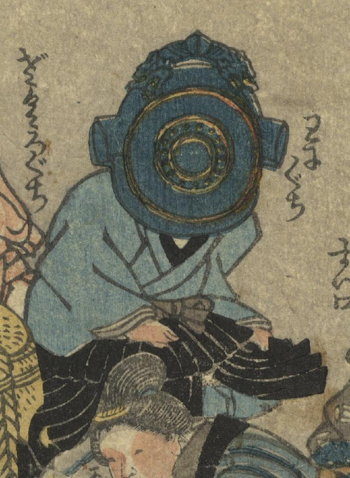

← 图鉴索引

仏具である鰐口の妖怪。
著作者：一鵬斎芳藤／出典：親書誌：U426_nichibunken_0404：見まへきくまへはなすまへ；ミマエ キクマエ ハナスマエ／日付：2015／資源識別子：U426_nichibunken_0404_0001_0003
Copyright (c)2010- International Research Center for Japanese Studies, Kyoto, Japan. All rights reserved.